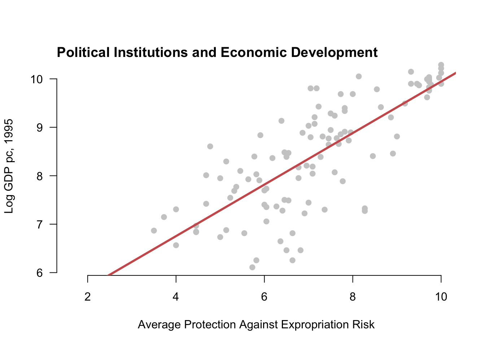
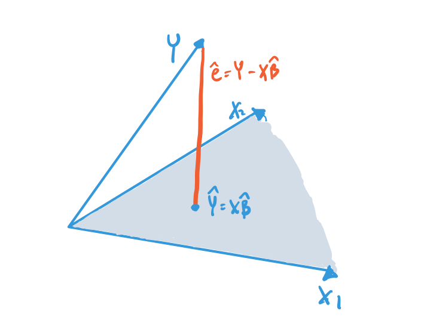

6 The mechanics of least squares
This chapter explores the most widely used estimator for population linear regressions: ordinary least squares (OLS). OLS is a plug-in estimator for the best linear projection (or population linear regression) described in the last chapter. Its popularity is partly due to its ease of interpretation, computational simplicity, and statistical efficiency. Because most people in the quantitative social sciences rely extensively on OLS for their own research, the time you spend developing deep familiarity with this approach will serve you well.
In this chapter, we focus on motivating the estimator and the mechanical or algebraic properties of the OLS estimator. In the next chapter, we will investigate its statistical assumptions. Textbooks often introduce OLS under the assumption of a linear model for the conditional expectation, but this is unnecessary if we view the inference target as the best linear predictor. We discuss this point more fully in the next chapter.
6.1 Deriving the OLS estimator
The last chapter on the linear model and the best linear projection operated purely in the population, not samples. We derived the population regression coefficients \(\bfbeta\), representing the coefficients on the line of best fit in the population. We now take these as our quantity of interest. We now focus on how to use a sample from the population to make inferences about the line of best fit in the population and the population coefficients. To do this, we will focus on the OLS estimator for these population quantities.
Assumption
The variables \(\{(Y_1, \X_1), \ldots, (Y_i,\X_i), \ldots, (Y_n, \X_n)\}\) are i.i.d. draws from a common distribution \(F\).
Recall the population linear coefficients (or best linear predictor coefficients) that we derived in the last chapter, \[ \bfbeta = \argmin_{\mb{b} \in \real^k}\; \E\bigl[ \bigl(Y_{i} - \mb{X}_{i}'\mb{b} \bigr)^2\bigr] = \left(\E[\X_{i}\X_{i}']\right)^{-1}\E[\X_{i}Y_{i}] \]
We will consider two different ways to derive the OLS estimator for these coefficients, both of which are versions of the plug-in principle. The first approach is to use the closed-form representation of the coefficients and then to replace any expectations with sample means, \[ \bhat = \left(\frac{1}{n} \sum_{i=1}^n \X_i\X_i' \right)^{-1} \left(\frac{1}{n} \sum_{i=1}^n \X_{i}Y_{i} \right), \] which exists if \(\sum_{i=1}^n \X_i\X_i'\) is positive definite and thus invertible. We will return to this assumption below.
In a simple bivariate linear projection model \(m(X_{i}) = \beta_0 + \beta_1X_{i}\), we saw that the population slope was \(\beta_1= \text{cov}(Y_{i},X_{i})/ \V[X_{i}]\). This approach means that the estimator for the slope should be the ratio of the sample covariance of \(Y_i\) and \(X_i\) to the sample variance of \(X_i\), or \[ \widehat{\beta}_{1} = \frac{\widehat{\sigma}_{Y,X}}{\widehat{\sigma}^{2}_{X}} = \frac{ \frac{1}{n-1}\sum_{i=1}^{n} (Y_{i} - \overline{Y})(X_{i} - \overline{X})}{\frac{1}{n-1} \sum_{i=1}^{n} (X_{i} - \Xbar)^{2}}. \]
This plug-in approach is widely applicable and tends to have excellent properties in large samples under iid data. But the simplicity of the plug-in approach also hides some features of the estimator that become more apparent when deriving the estimator more explicitly using calculus. The second approach applies the plug-in principle not to the closed-form expression for the coefficients but to the optimization problem itself. We call this the least squares estimator because it minimizes the empirical (or sample) squared prediction error, \[ \bhat = \argmin_{\mb{b} \in \real^k}\; \frac{1}{n} \sum_{i=1}^{n}\bigl(Y_{i} - \mb{X}_{i}'\mb{b} \bigr)^2 = \argmin_{\mb{b} \in \real^k}\; SSR(\mb{b}), \] where, \[ SSR(\mb{b}) = \sum_{i=1}^{n}\bigl(Y_{i} - \mb{X}_{i}'\mb{b} \bigr)^2 \] is the sum of the squared residuals. To distinguish it from other, more complicated least squares estimators, we call this the ordinary least squares estimator, or OLS.
Let’s solve this minimization problem. We write down the first-order conditions as \[ 0=\frac{\partial SSR(\bhat)}{\partial \bfbeta} = 2 \left(\sum_{i=1}^{n} \X_{i}Y_{i}\right) - 2\left(\sum_{i=1}^{n}\X_{i}\X_{i}'\right)\bhat. \] We can rearrange this system of equations to \[ \left(\sum_{i=1}^{n}\X_{i}\X_{i}'\right)\bhat = \left(\sum_{i=1}^{n} \X_{i}Y_{i}\right). \] To obtain the solution for \(\bhat\), notice that \(\sum_{i=1}^{n}\X_{i}\X_{i}'\) is a \((k+1) \times (k+1)\) matrix and \(\bhat\) and \(\sum_{i=1}^{n} \X_{i}Y_{i}\) are both \(k+1\) length column vectors. If \(\sum_{i=1}^{n}\X_{i}\X_{i}'\) is invertible, then we can multiply both sides of this equation by that inverse to arrive at \[ \bhat = \left(\sum_{i=1}^n \X_i\X_i' \right)^{-1} \left(\sum_{i=1}^n \X_{i}Y_{i} \right), \] which is the same expression as the plug-in estimator (after canceling the \(1/n\) terms). To confirm that we have found a minimum, we also need to check the second-order condition, \[ \frac{\partial^{2} SSR(\bhat)}{\partial \bfbeta\bfbeta'} = 2\left(\sum_{i=1}^{n}\X_{i}\X_{i}'\right) > 0. \] What does the matrix being “positive” mean? In matrix algebra, this condition means that the matrix \(\sum_{i=1}^{n}\X_{i}\X_{i}'\) is positive definite, a condition that we discuss in Section 6.4.
Both the plug-in or least squares approaches yield the same estimator for the best linear predictor/population linear regression coefficients.
Theorem 6.1 If the \(\sum_{i=1}^{n}\X_{i}\X_{i}'\) is positive definite, then the ordinary least squares estimator is \[ \bhat = \left(\sum_{i=1}^n \X_i\X_i' \right)^{-1} \left(\sum_{i=1}^n \X_{i}Y_{i} \right). \]
Formula for the OLS slopes
Almost all regression will contain an intercept term, usually represented as a constant 1 in the covariate vector. It is also possible to obtain expressions for the OLS estimates of the intercept and variable coefficients separately. We can rewrite the best linear predictor decomposition as \[ Y_{i} = \alpha + \X_{i}'\bfbeta + \e_{i}. \] Defined this way, we can write the OLS estimator for the “slopes” on \(\X_i\) as the OLS estimator with all variables demeaned: \[ \bhat = \left(\frac{1}{n} \sum_{i=1}^{n} (\X_{i} - \overline{\X})(\X_{i} - \overline{\X})'\right) \left(\frac{1}{n} \sum_{i=1}^{n}(\X_{i} - \overline{\X})(Y_{i} - \overline{Y})\right) \] which is the inverse of the sample covariance matrix of \(\X_i\) times the sample covariance of \(\X_i\) and \(Y_i\). The intercept is \[ \widehat{\alpha} = \overline{Y} - \overline{\X}'\bhat. \]
When dealing with actual data and not the population, we refer to the prediction errors \(\widehat{e}_{i} = Y_i - \X_i'\bhat\) as the residuals. The predicted value itself, \(\widehat{Y}_i = \X_{i}'\bhat\), is also called the fitted value. With the population linear regression, we saw that the projection errors, \(e_i = Y_i - \X_i'\bfbeta\), were mean zero and uncorrelated with the covariates \(\E[\X_{i}e_{i}] = 0\). The residuals have a similar property with respect to the covariates in the sample: \[ \sum_{i=1}^n \X_i\widehat{e}_i = 0. \] The residuals are exactly uncorrelated with the covariates (when the covariates include a constant/intercept term), which is a mechanical artifact of the OLS estimator.
Figure 6.2 shows how OLS works in the bivariate case. It displays three possible regression lines as well as the sum of the squared residuals for each line. OLS aims to find the line that minimizes the function on the right.
6.2 Model fit
We have learned how to use OLS to obtain an estimate of the best linear predictor, but an open question is whether that prediction is any good. Does using \(\X_i\) help us predict \(Y_i\)? To investigate this, we consider two different prediction errors: (1) those using covariates and (2) those that do not.
We have already seen the prediction error when using the covariates; it is just the sum of the squared residuals, \[ SSR = \sum_{i=1}^n (Y_i - \X_{i}'\bhat)^2. \] Recall that the best predictor for \(Y_i\) without any covariates is simply its sample mean \(\overline{Y}\). The prediction error without covariates is what we call the total sum of squares, \[ TSS = \sum_{i=1}^n (Y_i - \overline{Y})^2. \] Figure 6.3 shows the difference between these two types of prediction errors.

We can use the proportion reduction in prediction error from adding those covariates to measure how much those covariates improve the regression’s predictive ability. This value, called the coefficient of determination or \(R^2\), is simply \[ R^2 = \frac{TSS - SSR}{TSS} = 1-\frac{SSR}{TSS}. \] The numerator, \(TSS - SSR\), is the reduction in prediction error moving from \(\overline{Y}\) to \(\X_i'\bhat\) as the predictor. The denominator is the prediction error using \(\overline{Y}\). Thus, the \(R^2\) value is the fraction of the total prediction error eliminated by using \(\X_i\) to predict \(Y_i\). Another way to think about this value is that it measures how much less noisy the residuals are relative to the overall variation in \(Y\). One thing to note is that OLS with covariates will always improve in-sample fit so that \(TSS \geq SSR\) even if \(\X_i\) is unrelated to \(Y_i\). This phantom improvement occurs because the point of OLS is to minimize the SSR, and it will do that even if it is just chasing noise.
Since regression always improves in-sample fit, \(R^2\) will fall between 0 and 1. A value 0 zero would indicate exactly 0 estimated coefficients on all covariates (except the intercept) so that \(Y_i\) and \(\X_i\) are perfectly orthogonal in the data. (This is very unlikely to occur because there will likely be some minimal but nonzero relationship by random chance.) A value of 1 indicates a perfect linear fit, which occurs when all data points are perfectly predicted by the model with zero residuals.
6.3 Matrix form of OLS
We derived the OLS estimator above using simple algebra and calculus, but a more common representation of the estimator relies on vectors and matrices. We usually write the linear model for a generic unit, \(Y_i = \X_i'\bfbeta + e_i\), but obviously, there are \(n\) of these equations, \[ \begin{aligned} Y_1 &= \X_1'\bfbeta + e_1 \\ Y_2 &= \X_2'\bfbeta + e_2 \\ &\vdots \\ Y_n &= \X_n'\bfbeta + e_n \\ \end{aligned} \] We can write this system of equations more compactly using matrix algebra. Combining the variables here into random vectors/matrices gives us: \[ \mb{Y} = \begin{pmatrix} Y_1 \\ Y_2 \\ \vdots \\ Y_n \end{pmatrix}, \quad \mathbb{X} = \begin{pmatrix} \X'_1 \\ \X'_2 \\ \vdots \\ \X'_n \end{pmatrix} = \begin{pmatrix} 1 & X_{11} & X_{12} & \cdots & X_{1k} \\ 1 & X_{21} & X_{22} & \cdots & X_{2k} \\ \vdots & \vdots & \vdots & \vdots & \vdots \\ 1 & X_{n1} & X_{n2} & \cdots & X_{nk} \\ \end{pmatrix}, \quad \mb{e} = \begin{pmatrix} e_1 \\ e_2 \\ \vdots \\ e_n \end{pmatrix} \] We can write the above system of equations as \[ \mb{Y} = \mathbb{X}\bfbeta + \mb{e}, \] Note that \(\mathbb{X}\) is an \(n \times (k+1)\) matrix and \(\bfbeta\) is a \(k+1\) length column vector.
Representing sums in matrix form is the critical link between the definition of OLS and matrix notation. In particular, we have \[ \begin{aligned} \sum_{i=1}^n \X_i\X_i' &= \Xmat'\Xmat \\ \sum_{i=1}^n \X_iY_i &= \Xmat'\mb{Y}, \end{aligned} \] which means we can write the OLS estimator in the more recognizable form as \[ \bhat = \left( \mathbb{X}'\mathbb{X} \right)^{-1} \mathbb{X}'\mb{Y}. \]
We can of course also define the vector of residuals, \[ \widehat{\mb{e}} = \mb{Y} - \mathbb{X}\bhat = \left[ \begin{array}{c} Y_1 \\ Y_2 \\ \vdots \\ Y_n \end{array} \right] - \left[ \begin{array}{c} 1\widehat{\beta}_0 + X_{11}\widehat{\beta}_1 + X_{12}\widehat{\beta}_2 + \dots + X_{1k}\widehat{\beta}_k \\ 1\widehat{\beta}_0 + X_{21}\widehat{\beta}_1 + X_{22}\widehat{\beta}_2 + \dots + X_{2k}\widehat{\beta}_k \\ \vdots \\ 1\widehat{\beta}_0 + X_{n1}\widehat{\beta}_1 + X_{n2}\widehat{\beta}_2 + \dots + X_{nk}\widehat{\beta}_k \end{array} \right], \] and so the sum of the squared residuals in this case becomes \[ SSR(\bfbeta) = \Vert\mb{Y} - \mathbb{X}\bfbeta\Vert^{2} = (\mb{Y} - \mathbb{X}\bfbeta)'(\mb{Y} - \mathbb{X}\bfbeta), \] where the double vertical lines are the Euclidean norm of the argument, \(\Vert \mb{z} \Vert = \sqrt{\sum_{i=1}^n z_i^{2}}\). The OLS minimization problem, then, is \[ \bhat = \argmin_{\mb{b} \in \mathbb{R}^{(k+1)}}\; \Vert\mb{Y} - \mathbb{X}\mb{b}\Vert^{2} \] Finally, we can write the lack of correlation of the covariates and the residuals as \[ \mathbb{X}'\widehat{\mb{e}} = \sum_{i=1}^{n} \X_{i}\widehat{e}_{i} = 0, \] which also implies these vectors are orthogonal.
6.4 Rank, linear independence, and multicollinearity
We noted that the OLS estimator exists when \(\sum_{i=1}^n \X_i\X_i'\) is positive definite or that there is “no multicollinearity.” This assumption is equivalent to saying that the matrix \(\mathbb{X}\) is full column rank, meaning that \(\text{rank}(\mathbb{X}) = (k+1)\), where \(k+1\) is the number of columns of \(\mathbb{X}\). Recall from matrix algebra that the column rank is the number of linearly independent columns in the matrix, and linear independence means that \(\mathbb{X}\mb{b} = 0\) if and only if \(\mb{b}\) is a column vector of 0s. In other words, we have \[ b_{1}\mathbb{X}_{1} + b_{2}\mathbb{X}_{2} + \cdots + b_{k+1}\mathbb{X}_{k+1} = 0 \quad\iff\quad b_{1} = b_{2} = \cdots = b_{k+1} = 0, \] where \(\mathbb{X}_j\) is the \(j\)th column of \(\mathbb{X}\). Thus, full column rank says that all the columns are linearly independent or that there is no “multicollinearity.”
Could this be violated? Suppose we accidentally included a linear function of one variable so that \(\mathbb{X}_2 = 2\mathbb{X}_1\). We then have \[ \begin{aligned} \mathbb{X}\mb{b} &= b_{1}\mathbb{X}_{1} + b_{2}2\mathbb{X}_1+ b_{3}\mathbb{X}_{3}+ \cdots + b_{k+1}\mathbb{X}_{k+1} \\ &= (b_{1} + 2b_{2})\mathbb{X}_{1} + b_{3}\mathbb{X}_{3} + \cdots + b_{k+1}\mathbb{X}_{k+1} \end{aligned} \] In this case, this expression equals 0 when \(b_3 = b_4 = \cdots = b_{k+1} = 0\) and \(b_1 = -2b_2\). Thus, the collection of columns is linearly dependent, so we know that the rank of \(\mathbb{X}\) must be less than full column rank (that is, less than \(k+1\)). Hopefully it is also clear that if we removed the problematic column \(\mathbb{X}_2\), the resulting matrix would have \(k\) linearly independent columns, implying that \(\mathbb{X}\) is rank \(k\).
Why does this rank condition matter for the OLS estimator? In short, linear independence of the columns of \(\Xmat\) ensures that the inverse \((\Xmat'\Xmat)^{-1}\) exists and so does \(\bhat\). This is because \(\Xmat\) is of full column rank if and only if \(\Xmat'\Xmat\) is non-singular and a matrix is invertible if and only if it is non-singular. This full rank condition further implies that \(\Xmat'\Xmat = \sum_{i=1}^{n}\X_{i}\X_{i}'\) is positive definite, implying that the estimator is truly finding the minimal sum of squared residuals.
What are common situations that lead to violations of no multicollinearity? We have seen one above, with one variable being a linear function of another. But this problem can come out in more subtle ways. Suppose we have a set of dummy variables corresponding to a single categorical variable, like the region of the world. This might mean we have \(X_{i1} = 1\) for units in Asia (0 otherwise), \(X_{i2} = 1\) for units in Europe (0 otherwise), \(X_{i3} = 1\) for units in Africa (0 otherwise), and \(X_{i4} = 1\) for units in the Americas (0 otherwise), and \(X_{i5} = 1\) for countries in Oceania (0 otherwise). Each unit has to be in exactly one of these five regions, so there is a linear dependence between these variables, \[ X_{i5} = 1 - X_{i1} - X_{i2} - X_{i3} - X_{i4}. \] That is, if a unit is not in Asia, Europe, Africa, or the Americas, we know it is in Oceania. We would get a linear dependence by including all of these variables in our regression with an intercept. (Note the 1 in the relationship between \(X_{i5}\) and the other variables, the reason why there will be linear dependence when including a constant.) Thus, we usually omit one dummy variable from each categorical variable. In that case, the coefficients on the remaining dummies are differences in means between that category and the omitted one (perhaps conditional on other variables included, if included). So if we omitted \(X_{i5}\) (Oceania), then the coefficient on \(X_{i1}\) would be the difference in mean outcomes between units in Asia and Oceania.
Collinearity can also occur when including both an intercept term and a variable that does not vary. This issue can often happen if we mistakenly subset our data, for example in this case if we subsetted the data to only the Asian units but still included the Asian dummy variable in the regression.
Finally, note that most statistical software packages will “solve” the multicollinearity by arbitrarily removing as many linearly dependent covariates as is necessary to achieve full rank. R will show the estimated coefficients as NA in those cases.
6.5 OLS coefficients for binary and categorical regressors
Suppose that the covariates include just the intercept and a single binary variable, \(\X_i = (1\; X_{i})'\), where \(X_i \in \{0,1\}\). In other words, the right-hand side contains only one covariate, an indicator variable. In this case, the OLS coefficient on \(X_i\), \(\widehat{\beta_{1}}\), is exactly equal to the difference in sample means of \(Y_i\) in the \(X_i = 1\) group and the \(X_i = 0\) group: \[ \widehat{\beta}_{1} = \frac{\sum_{i=1}^{n} X_{i}Y_{i}}{\sum_{i=1}^{n} X_{i}} - \frac{\sum_{i=1}^{n} (1 - X_{i})Y_{i}}{\sum_{i=1}^{n} 1- X_{i}} = \overline{Y}_{X =1} - \overline{Y}_{X=0} \] This very useful result is not an approximation: it holds exactly for any sample size.
We can generalize this idea to discrete variables more broadly. Suppose we have our region variables from the last section and include in our covariates a constant and the dummies for Asia, Europe, Africa, and the Americas (with Oceania again being the omitted variable/category). Then the coefficient on the West dummy will be \[ \widehat{\beta}_{\text{Asia}} = \overline{Y}_{\text{Asia}} - \overline{Y}_{\text{Oceania}}, \] which is exactly the difference in sample means of \(Y_i\) between Asian units and units in Oceania.
Note that these interpretations only hold when the regression consists solely of the binary variable or the set of categorical dummy variables. These exact relationships fail when other covariates are added to the model.
6.6 Projection and geometry of least squares
OLS has a very nice geometric interpretation that adds a lot of intuition for various aspects of the method. In this geometric approach, we view \(\mb{Y}\) as an \(n\)-dimensional vector in \(\mathbb{R}^n\). As we saw above, OLS in matrix form is about finding a linear combination of the covariate matrix \(\Xmat\) closest to this vector in terms of the Euclidean distance, which is just the sum of squares.
Let \(\mathcal{C}(\Xmat) = \{\Xmat\mb{b} : \mb{b} \in \mathbb{R}^(k+1)\}\) be the column space of the matrix \(\Xmat\). This set is all linear combinations of the columns of \(\Xmat\) or the set of all possible linear predictions we could obtain from \(\Xmat\). Note that the OLS fitted values, \(\Xmat\bhat\), are in this column space. If, as we assume, \(\Xmat\) has full column rank of \(k+1\), then the column space \(\mathcal{C}(\Xmat)\) will be a \(k+1\)-dimensional surface inside of the larger \(n\)-dimensional space. If \(\Xmat\) has two columns, the column space will be a plane.
Another interpretation of the OLS estimator is that it finds the linear predictor as the closest point in the column space of \(\Xmat\) to the outcome vector \(\mb{Y}\). This is called the projection of \(\mb{Y}\) onto \(\mathcal{C}(\Xmat)\). Figure 6.4 shows this projection for a case with \(n=3\) and 2 columns in \(\Xmat\). The shaded blue region represents the plane of the column space of \(\Xmat\), and \(\Xmat\bhat\) is the closest point to \(\mb{Y}\) in that space. This illustrates the whole idea of the OLS estimator: find the linear combination of the columns of \(\Xmat\) (a point in the column space) that minimizes the Euclidean distance between that point and the outcome vector (the sum of squared residuals).

This figure shows that the residual vector, which is the difference between the \(\mb{Y}\) vector and the projection \(\Xmat\bhat\), is perpendicular or orthogonal to the column space of \(\Xmat\). This orthogonality is a consequence of the residuals being orthogonal to all the columns of \(\Xmat\), \[ \Xmat'\mb{e} = 0, \] as we established above. Being orthogonal to all the columns means it will also be orthogonal to all linear combinations of the columns.
6.7 Projection and annihilator matrices
With the idea of projection to the column space of \(\Xmat\) established, we can define a way to project any vector into that space. The \(n\times n\) projection matrix, \[ \mb{P}_{\Xmat} = \Xmat (\Xmat'\Xmat)^{-1} \Xmat', \] projects a vector into \(\mathcal{C}(\Xmat)\). In particular, we can see that this gives us the fitted values for \(\mb{Y}\): \[ \mb{P}_{\Xmat}\mb{Y} = \Xmat (\Xmat'\Xmat)^{-1} \Xmat'\mb{Y} = \Xmat\bhat. \] Because we sometimes write the linear predictor as \(\widehat{\mb{Y}} = \Xmat\bhat\), the projection matrix is also called the hat matrix. With either name, multiplying a vector by \(\mb{P}_{\Xmat}\) gives the best linear predictor of that vector as a function of \(\Xmat\). Intuitively, any vector that is already a linear combination of the columns of \(\Xmat\) (so is in \(\mathcal{C}(\Xmat)\)) should be unaffected by this projection: the closest point in \(\mathcal{C}(\Xmat)\) to a point already in \(\mathcal{C}(\Xmat)\) is itself. We can also see this algebraically for any linear combination \(\Xmat\mb{c}\), \[ \mb{P}_{\Xmat}\Xmat\mb{c} = \Xmat (\Xmat'\Xmat)^{-1} \Xmat'\Xmat\mb{c} = \Xmat\mb{c}, \] because \((\Xmat'\Xmat)^{-1} \Xmat'\Xmat\) simplifies to the identity matrix. In particular, the projection of \(\Xmat\) onto itself is just itself: \(\mb{P}_{\Xmat}\Xmat = \Xmat\).
The second matrix related to projection is the annihilator matrix, \[ \mb{M}_{\Xmat} = \mb{I}_{n} - \mb{P}_{\Xmat}, \] which projects any vector into the orthogonal complement to the column space of \(\Xmat\), \[ \mathcal{C}^{\perp}(\Xmat) = \{\mb{c} \in \mathbb{R}^n\;:\; \Xmat\mb{c} = 0 \}. \] This matrix is called the annihilator matrix because applying it to any linear combination of \(\Xmat\), gives us 0: \[ \mb{M}_{\Xmat}\Xmat\mb{c} = \Xmat\mb{c} - \mb{P}_{\Xmat}\Xmat\mb{c} = \Xmat\mb{c} - \Xmat\mb{c} = 0. \] Note that \(\mb{M}_{\Xmat}\Xmat = 0\). Why should we care about this matrix? Perhaps a more evocative name might be the residual maker since it makes residuals when applied to \(\mb{Y}\), \[ \mb{M}_{\Xmat}\mb{Y} = (\mb{I}_{n} - \mb{P}_{\Xmat})\mb{Y} = \mb{Y} - \mb{P}_{\Xmat}\mb{Y} = \mb{Y} - \Xmat\bhat = \widehat{\mb{e}}. \]
The projection matrix has several useful properties:
\(\mb{P}_{\Xmat}\) and \(\mb{M}_{\Xmat}\) are idempotent, which means that when applied to itself, it simply returns itself: \(\mb{P}_{\Xmat}\mb{P}_{\Xmat} = \mb{P}_{\Xmat}\) and \(\mb{M}_{\Xmat}\mb{M}_{\Xmat} = \mb{M}_{\Xmat}\).
\(\mb{P}_{\Xmat}\) and \(\mb{M}_{\Xmat}\) are symmetric \(n \times n\) matrices so that \(\mb{P}_{\Xmat}' = \mb{P}_{\Xmat}\) and \(\mb{M}_{\Xmat}' = \mb{M}_{\Xmat}\).
The rank of \(\mb{P}_{\Xmat}\) is \(k+1\) (the number of columns of \(\Xmat\)) and the rank of \(\mb{M}_{\Xmat}\) is \(n - k - 1\).
We can use the projection and annihilator matrices to arrive at an orthogonal decomposition of the outcome vector: \[ \mb{Y} = \Xmat\bhat + \widehat{\mb{e}} = \mb{P}_{\Xmat}\mb{Y} + \mb{M}_{\Xmat}\mb{Y}. \]
6.8 Residual regression
There are many situations where we can partition the covariates into two groups, and we might wonder if it is possible to express or calculate the OLS coefficients for just one set of covariates. In particular, let the columns of \(\Xmat\) be partitioned into \([\Xmat_{1} \Xmat_{2}]\), so that the linear prediction we are estimating is \[ \mb{Y} = \Xmat_{1}\bfbeta_{1} + \Xmat_{2}\bfbeta_{2} + \mb{e}, \] with estimated coefficients and residuals \[ \mb{Y} = \Xmat_{1}\bhat_{1} + \Xmat_{2}\bhat_{2} + \widehat{\mb{e}}. \]
We now document another way to obtain the estimator \(\bhat_1\) from this regression using a technique called residual regression, partitioned regression, or the Frisch-Waugh-Lovell theorem.
Residual regression approach
The residual regression approach is:
- Use OLS to regress \(\mb{Y}\) on \(\Xmat_2\) and obtain residuals \(\widetilde{\mb{e}}_2\).
- Use OLS to regress each column of \(\Xmat_1\) on \(\Xmat_2\) and obtain residuals \(\widetilde{\Xmat}_1\).
- Use OLS to regress \(\widetilde{\mb{e}}_{2}\) on \(\widetilde{\Xmat}_1\).
Theorem 6.2 (Frisch-Waugh-Lovell) The OLS coefficients from a regression of \(\widetilde{\mb{e}}_{2}\) on \(\widetilde{\Xmat}_1\) are equivalent to the coefficients on \(\Xmat_{1}\) from the regression of \(\mb{Y}\) on both \(\Xmat_{1}\) and \(\Xmat_2\).
An implication of this theorem is that the regression coefficient for a given variable captures the relationship between the residual variation in the outcome and that variable after accounting for the other covariates. In particular, this coefficient focuses on the variation orthogonal to those other covariates.
While perhaps unexpected, this result may not appear particularly useful. We can just run the long regression, right? But this trick can be very handy when \(\Xmat_2\) consists of dummy variables (or “fixed effects”) for a categorical variable with many categories. For example, suppose \(\Xmat_2\) consists of indicators for the county of residence for a respondent. In that case, that will have over 3,000 columns, meaning that direct calculation of the \(\bhat = (\bhat_{1}, \bhat_{2})\) will require inverting a matrix that is bigger than \(3,000 \times 3,000\). Computationally, this process will be very slow. But above, we saw that predictions of an outcome on a categorical variable are just the sample mean within each level of the variable. Thus, in this case, the residuals \(\widetilde{\mb{e}}_2\) and \(\Xmat_1\) can be computed by demeaning the outcome and \(\Xmat_1\) within levels of the dummies in \(\Xmat_2\), which can be considerably faster computationally.
Finally, using residual regression allows researchers to visualize the conditional relationships between the outcome and a single independent variable after adjusting for other covariates. In particular, one can check the relationship using this approach with a scatterplot of \(\widetilde{\mb{e}}_2\) on \(\Xmat_1\) (when it is a single column). This residualized scatterplot allows researchers to check if this conditional relationship appears linear or should be modeled in another way.
6.9 Outliers, leverage points, and influential observations
Given that OLS finds the coefficients that minimize the sum of the squared residuals, asking how much impact each residual has on that solution is very helpful. Let \(\bhat_{(-i)}\) be the OLS estimates if we omit unit \(i\). Intuitively, influential observations should significantly impact the estimated coefficients so that \(\bhat_{(-i)} - \bhat\) is large in absolute value.
Under what conditions do we have influential observations? OLS tries to minimize the sum of squared residuals, so it will move more in order to shrink larger residuals versus smaller ones. Where are large residuals likely to occur? Well, notice that any OLS regression line with a constant will exactly pass through the means of the outcome and the covariates: \(\overline{Y} = \overline{\X}\bhat\). Thus, by definition, this means that, when an observation is close to the average of the covariates, \(\overline{\X}\), it cannot have that much influence because OLS forces the regression line to go through \(\overline{Y}\). Thus, influential points will have two properties:
- Have high leverage, where leverage roughly measures how far \(\X_i\) is from \(\overline{\X}\), and
- Be an outlier in the sense of having a large residual (if left out of the regression).
We’ll take each of these in turn.
6.9.1 Leverage points
We can define the leverage of an observation by \[ h_{ii} = \X_{i}'\left(\Xmat'\Xmat\right)^{-1}\X_{i}, \] which is the \(i\)th diagonal entry of the projection matrix, \(\mb{P}_{\Xmat}\). Notice that \[ \widehat{\mb{Y}} = \mb{P}_{\Xmat}\mb{Y} \qquad \implies \qquad \widehat{Y}_i = \sum_{j=1}^n h_{ij}Y_j, \] so that \(h_{ij}\) is the importance of observation \(j\) for the fitted value for observation \(i\). The leverage, then, is the importance of the observation for its own fitted value. We can also interpret these values in terms of the distribution of \(\X_{i}\). Roughly speaking, these values are the weighted distance between \(\X_i\) and \(\overline{\X}\), where the weights normalize to the empirical variance/covariance structure of the covariates (so that the scale of each covariate is roughly the same). We can see this most clearly when we fit a simple linear regression (with one covariate and an intercept) with OLS when the leverage is \[ h_{ii} = \frac{1}{n} + \frac{(X_i - \overline{X})^2}{\sum_{j=1}^n (X_j - \overline{X})^2} \]
Leverage values have three key properties:
- \(0 \leq h_{ii} \leq 1\)
- \(h_{ii} \geq 1/n\) if the model contains an intercept
- \(\sum_{i=1}^{n} h_{ii} = k + 1\)
6.9.2 Outliers and leave-one-out regression
In the context of OLS, an outlier is an observation with a large prediction error for a particular OLS specification. Figure 6.5 shows an example of an outlier.
Intuitively, it seems as though we could use the residual \(\widehat{e}_i\) to assess the prediction error for a given unit. But the residuals are not valid predictions because the OLS estimator is designed to make those as small as possible (in machine learning parlance, these were in the training set). In particular, if an outlier is influential, we already noted that it might “pull” the regression line toward it, and the resulting residual might be pretty small.
To assess prediction errors more cleanly, we can use leave-one-out regression (LOO), which regresses \(\mb{Y}_{(-i)}\) on \(\Xmat_{(-i)}\), where these omit unit \(i\): \[ \bhat_{(-i)} = \left(\Xmat'_{(-i)}\Xmat_{(-i)}\right)^{-1}\Xmat_{(-i)}\mb{Y}_{(-i)}. \] We can then calculate LOO prediction errors as \[ \widetilde{e}_{i} = Y_{i} - \X_{i}'\bhat_{(-i)}. \] Calculating these LOO prediction errors for each unit appears to be computationally costly because it seems as though we have to fit OLS \(n\) times. Fortunately, there is a closed-form expression for the LOO coefficients and prediction errors in terms of the original regression, \[ \bhat_{(-i)} = \bhat - \left( \Xmat'\Xmat\right)^{-1}\X_i\widetilde{e}_i \qquad \widetilde{e}_i = \frac{\widehat{e}_i}{1 - h_{ii}}. \tag{6.1}\] This shows that the LOO prediction errors will differ from the residuals when the leverage of a unit is high. This makes sense! We said earlier that observations with low leverage would be close to \(\overline{\X}\), where the outcome values have relatively little impact on the OLS fit (because the regression line must go through \(\overline{Y}\)).
6.9.3 Influential observations
An influential observation (also sometimes called an influential point) is a unit that has the power to change the coefficients and fitted values for a particular OLS specification. Figure 6.6 shows an example of such an influence point.
One measure of influence, called DFBETA\(_i\), measures how much \(i\) changes the estimated coefficient vector \[ \bhat - \bhat_{(-i)} = \left( \Xmat'\Xmat\right)^{-1}\X_i\widetilde{e}_i, \] so there is one value for each observation-covariate pair. When divided by the standard error of the estimated coefficients, this is called DFBETAS (where the “S” is for standardized). These are helpful if we focus on a particular coefficient.
When we want to summarize how much an observation matters for the fit, we can use a compact measure of the influence of an observation by comparing the fitted value from the entire sample to the fitted value from the leave-one-out regression. Using the DFBETA above, we have \[ \widehat{Y}_i - \X_{i}\bhat_{(-1)} = \X_{i}'(\bhat -\bhat_{(-1)}) = \X_{i}'\left( \Xmat'\Xmat\right)^{-1}\X_i\widetilde{e}_i = h_{ii}\widetilde{e}_i, \] so the influence of an observation is its leverage multiplied by how much of an outlier it is. This value is sometimes called DFFIT (difference in fit). One transformation of this quantity, Cook’s distance, standardizes this by the sum of the squared residuals: \[ D_i = \frac{n-k-1}{k+1}\frac{h_{ii}\widetilde{e}_{i}^{2}}{\widehat{\mb{e}}'\widehat{\mb{e}}}. \] Different cutoffs exist for identifying “influential” observations, but they tend to be ad hoc. In any case, the more important question is “how much does this observation matter for my substantive interpretation” rather than the narrow question of a particular threshold.
It’s all well and good to find influential observations, but what should be done about them? The first thing to check is that the data is not corrupted somehow. Influence points sometimes occur because of a coding or data entry error. We may consider removing the observation if the error appears in the data acquired from another source but exercise transparency if this appears to be the case. Another approach is to consider a transformation of the dependent or independent variables, like taking the natural logarithm, that might dampen the effects of outliers. Finally, consider using methods that are robust to outliers such as least absolute deviations or least trimmed squares.
6.10 Summary
In this chapter, we introduced the ordinary least squares estimator, which finds the linear function of the \(\X_i\) that minimizes the sum of the squared residuals and is the sample version of the best linear predictor in the last chapter. The \(R^2\) statistic assesses the in-sample model fit of OLS by comparing how much better it predicts the outcome compared to a simple baseline predictor of the sample mean of the outcome. OLS can also be written in a very compact manner using matrix algebra, which allows us to understand the geometry of OLS as a projection of the outcome into space of linear functions of the independent variables. The Frisch-Waugh-Lovell theorem describes a residual regression approach to obtaining OLS estimates for subsets of coefficients, which can be helpful for computational efficiency or data visualization. Lastly, influential observations are those that alter the estimated coefficients when they are omitted from the OLS estimation, and there are several metrics that help to assess this. In the next chapter, we move from the mechanical properties to the statistical properties of OLS: unbiasedness, consistency, and asymptotic normality.